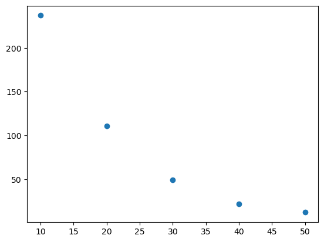
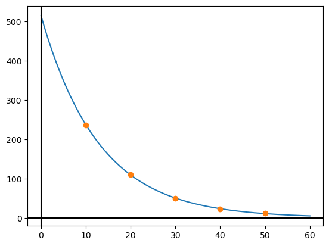
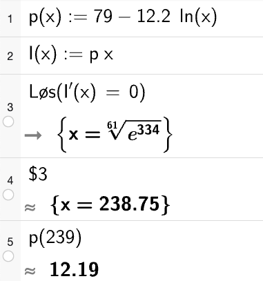

Løysingsforslag eksamen S2 - H23
Her er eit forslag til løysing av hausteksamen i S2 2023. I del 2 er oppgåvene stort sett Python brukt som hjelpemiddel.
Eg kan ikkje lova at løysinga er feilfri… 😊 Gje meg gjerne ein lyd i kommentarfeltet eller her om du ser feil 🔍
Sist oppdatert: 11.12
Eksamenssettet finn du hos UDIR: Finn eksamensoppgaver
Del 1 - utan hjelpemiddel
Oppgåve 1 - bestemt integral
Integrerer:
\[ \begin{align*} &\int_{-1}^{1} (x^3 + 2x) \, dx \\ &= \left[ \frac{x^4}{4} + x^2 \right]_{-1}^{1} \\ &= \left( \frac{1^4}{4} + 1^2 \right) - \left( \frac{(-1)^4}{4} + (-1)^2 \right) \\ &= \frac{1}{4} + 1 - \left( \frac{1}{4} + 1 \right) \\ &= 0 \end{align*} \]
La \(f(x) = x^3 + 2x\). Ser at \(f(x) < 0\) når \(x \in [ -1,0 \rangle\), og at \(f(x) > 0\) når \(x \in \langle 0,1]\).
\(\int_{-1}^{1} f(x) \, dx = 0\) betyr at arealet avgrensa av \(f(x)\) og \(x\)-aksen i kvart av dei to intervalla er like store. Sidan integrala har ulikt forteikn vert summen av dei \(0\).
Oppgåve 2 - rekker
a) summen av dei fire første ledda
Summen av ei uendelig geometrisk rekke som konvergerer er gitt ved
\[ S = \frac{a_1}{1 - k} \]
Her er \(S = 8\) og \(a_1 = 4\). Dermed får me
\[ \begin{align*} 8 &= \frac{4}{1 - k} \\ 8 - 8k &= 4 \\ 8k &= 4 \\ k &= \frac{4}{8} = \frac{1}{2} \end{align*} \]
Då blir
\[ \begin{align*} S_4 &= a_1 + a_2 + a_3 + a_4 \\ &= 4 + 2 + 1 + \frac{1}{2} \\ &= 7.5 \end{align*} \]
b)
Skal finna \(a_4\) når \[a_1 + a_4 + a_7 = 114\]
Veit at \[a_4 = a_1 + 3d \Leftrightarrow a_1 = a_4 - 3d\] og at \[a_7 = a_4 + 3d\]
Dermed får me
\[ \begin{align*} a_1 + a_4 + a_7 &= 114 \\ (a_4 - 3d) + a_4 + (a_4 + 3d) &= 114 \\ 3a_4 &= 114 \\ a_4 &= \frac{114}{3} = 38. \end{align*} \]
Oppgåve 3
a) einingskostnad
Ser at \(h(x)=81,75x\) skjær \(K(x)\) i punkt \(A\). Dvs at \(K(40)=g(40) = 81,75\cdot 40\)
Dermed må einingskostnaden når ein produserer 40 einingar vera 81,75 kr.
b) grensekostnad
I punkt \(A\), ved produksjon av 40 einingar tangerer \(f(x)=31x + 2030\) grafen til \(K(x)\).
Dvs. at stigningstalet til tangenten til \(K\) i \(x=40\) er 31. Dermed vil \(K'(40)=31\) som betyr at grensekostnaden er 31.
c) minste einingskostnad
Ser at det lågaste stigningstalet ei linje som kryssar både origo og \(K(x)\) er linja som tangerer grafen i punkt \(B\). Alle andre linjer for større eller mindre verdiar av \(x\) vil ha høgare stigningstal (og to skjæringspunkt).
Dermed er stigningstalet til denne tangenten, \(g(x)=60x\), den minste einingskostnaden.
Den minste einingskostnaden er 60 kr.
Oppgåve 4
a) - forklar kva eleven vil finna
Ser at eleven arbeider med funksjonen \(f(x)=x^2-1\) (linje 6-7). i dei første linjene deler han opp avstanden mellom \(x=-2\) og \(x=2\) i \(1000\) like store bitar som han kallar dx.
I for-løkka reknar han ut summen av 1000 rektangel mellom \(x=-2\) og \(x=2\). Dei har høgde slik at høgresida av rektangelet er like høgt som \(f(x)\) i den aktuelle \(x\)-verdien. Sidan han tar absoluttverdien av funksjonsverdien sikrar han at han finn positive verdiar (areal er positivt) for alle dei ulike rektangla.
Dette er ein måte å finna arealet avgrensa av \(f(x)\) og \(x\)-aksen når \(x\in[-2, 2]\).
b) - ved rekning
Veit at \(f(x)=x^2-1\) er - symmetrisk om \(x\)-aksen - \(0\) når \(x=-1 \vee x=1\) - konveks, dvs \(f(x)<0\) når \(-1<x<1\)
Kallar arealet me skal finna for \(A\). Som følgje av symmetrien om \(x\)-aksen er det nok å finna arealet avgrensa av \(x\)-aksen og grafen til \(f(x)\) mellom \(x=0\) og \(x=2\) og multiplisera resultatet her med 2. Då slepp me unna ein del algebra 😅 Sidan \(f(x)<0\) i det første intervallet må me endra forteikn på dette for å finna arealet. Dermed får me:
\[\begin{align*} A &= 2\cdot\left(-\int_{0}^1 f(x) \,dx + \int_1^2f(x) \,dx \right) \end{align*}\]
Reknar ut areala for seg
\[\begin{align*} \int_{0}^{1} f(x) \,dx &= \left(\frac{1^3}{3}-1\right) - \left(\frac{0^3}{3}-0\right) \\ &= \frac{-2}{3} \\ \\ \int_1^2f(x) \,dx &= \left(\frac{2^3}{3}-2\right) - \left(\frac{1^3}{3}-1\right) \\ &= \left(\frac{8}{3}-2\right) - \left(\frac{1}{3}-1\right) \\ &= \left(\frac{2}{3}\right) + \left(\frac{2}{3}\right) \\ &= \frac{4}{3} \end{align*}\]
Og arealet blir \[\begin{align*} A &= 2\cdot\left(-\int_{0}^1 f(x) \,dx + \int_1^2f(x) \,dx \right) \\ &= 2\cdot \left( - \left(\frac{-2}{3} \right) + \frac{4}{3} \right) \\ &= 2\cdot \frac{6}{3} \\ &= 4 \end{align*}\]
Oppgåve 5
Tre typar kuler i ein kasse.
| vekt (\(X\)) | \(P(X=x)\) |
|---|---|
| 4 kg | \(\frac{1}{4}\) |
| 5 kg | \(\frac{1}{2}\) |
| 10 kg | \(1-\frac{1}{4}-\frac{1}{2} = \frac{1}{4}\) |
a) Forventningsverdi, E(X)
\[\begin{align*} E(X) &= \sum_{i=1}^{3} x_i \cdot P(X=x_i) \\ &= 4\cdot \frac{1}{4} + 5\cdot\frac{1}{2} + 10 \cdot \frac{1}{4} \\ &= \frac{4 + 10 + 10}{4} = \frac{24}{4} = 6 \end{align*} \]
Dermed er \(E(X)=6\, kg\)
b) Sannsynsfordelinga til Y
Veit at \(Y=X_1 + X_2\). Sidan det er med tilbakelegging vil me kunna bruka to like eller to ulike kuler. Dermed kan total vekt, \(Y\), bli:
| vekt i kg (\(Y\)) | \(P(Y=y)\) |
|---|---|
| 8 = 4 + 4 | \(\frac{1}{16} = \frac{1}{4} \cdot \frac{1}{4}\) |
| 9 = 4 + 5 | \(\frac{1}{4} = 2\cdot \frac{1}{4} \cdot \frac{1}{2}\) |
| 10 = 5 + 5 | \(\frac{1}{4} = \frac{1}{2} \cdot \frac{1}{2}\) |
| 14 = 4 + 10 | \(\frac{1}{8} = 2\cdot \frac{1}{4} \cdot \frac{1}{4}\) |
| 15 = 5 + 10 | \(\frac{1}{4} = 2\cdot \frac{1}{2} \cdot \frac{1}{4}\) |
| 20 = 10 + 10 | \(\frac{1}{16} = \frac{1}{4} \cdot \frac{1}{4}\) |
Ser at summen av sannsyna her vert 1, som tyder på at fordelinga er rett.
c) P(Y > 10)
Bruker sannsynsfordelinga over.
\[ \begin{align*} P(Y>10) &= P(Y=14) + P(Y=15) + P(Y=20) \\ &= \frac{1}{8} + \frac{1}{4} + \frac{1}{16} \\ &= \frac{2 + 4 + 1}{16} \\ &= \frac{7}{16} \end{align*} \]
Del 2
Oppgåve 1
| Pris (kr) | Etterspurnad |
|---|---|
| 10 | 237 |
| 20 | 111 |
| 30 | 49 |
| 40 | 22 |
| 50 | 12 |
a) Lag ein modell
Lag ein modell \(q\) som kan brukast for å beskriva samanhengen mellom pris i kroner \(p\) og dagleg etterspurnad.
Ser at når ein aukar prisen med 10 kroner vert etterspurnaden omlag halvert. Det kan tyda på at ein eksponentiell modell kan passa her. Plottar datapunkta og ser korleis dei ser ut:
import matplotlib.pyplot as plt
pris = [10, 20, 30, 40, 50]
etterspurnad = [237, 111, 49, 22, 12]
plt.plot(pris, etterspurnad, "o")
plt.show()
Det ser framleis ut som ein eksponentiell funksjon er ein veg å gå her. Den er på forma \[q(p)= a \cdot b^p\] Bruker regresjon i python for å finna ein passande modell.
from scipy.optimize import curve_fit
import numpy as np
def q(p, a, b):
return a * b**p
# gjetter ca koeffverdi
#gjett = [650, 25, 1]
# finn funksjonen
K, E = curve_fit(q, xdata=pris, ydata=etterspurnad)
# hentar ut koeff.
a, b = K
x_verdiar = np.linspace(0, 60, 1000)
y_verdiar = q(x_verdiar, a, b)
# plottar modell og datapunkt
plt.plot(x_verdiar, y_verdiar)
plt.plot(pris, etterspurnad, "o")
# x- og y-akse
plt.axhline(y=0, c="black")
plt.axvline(x=0, c="black")
# skriv ut koeff.
print(f"a = {a:.0f} \nb = {b:.4f}")a = 515
b = 0.9255
Får at \(q(p)= 515\cdot 0,926^p\)
Denne modellen vil ikkje vera gyldig for veldig låge verdiar av \(p\) sidan det ikkje er realistisk at dei sel vara til feks. 1 kr. Samstundes vil nok ikkje modellen vera gyldig for veldig store verdiar av \(p\) heller, sidan prisen på eitt tidspunkt vert for høg til at nokon vil kjøpa vara. Prøver modellen for ulike verdiar for \(p\).
pris: 50, etterspurnad: 10.71
pris: 60, etterspurnad: 4.94
pris: 70, etterspurnad: 2.28
pris: 80, etterspurnad: 1.05
pris: 90, etterspurnad: 0.48Ser at etterspurnaden er ca. ei vare når prisen er 80. Etter dette vil ein ikkje få solgt varer.
Modellen kan vera gyldig når \(p\in[1, 80]\) (gitt at dei kan selja vara for mindre enn 10 kr.)
b) 70 einingar pr dag
Løyser likninga \(q(p)= 70\)
from sympy import Symbol, Eq, solveset, Reals
p = Symbol("p")
vs = 515 * 0.926**p
hs = 70
likning = Eq(vs, hs)
løysing = solveset(likning, p, Reals)
løysing.evalf(4)\(\displaystyle \left\{25.96\right\}\)
Prisen bør i følge modellen vera 26 jr for at bedrifta skal selja 70 einingar per dag.
c) størst mogleg inntekt
For ei anna vare gjeld modellen \[p=79-12,2 \ln(x)\] der \(x\) er den daglege etterspurnaden når vara kostar \(p\) kr.
Inntektene finn me ved å ganga prisen med tal solgte eininigar.
\[\begin{align*} I(x) &= p(x) \cdot x \\ &= (79-12.2\ln(x))\cdot x \end{align*}\]
Løyser i Python med SymPy
from sympy import diff, ln
x = Symbol("x")
# definerer og deriverer I
I = (79 - 12.2 * ln(x)) * x
dI = I.diff()
# finn nullpunkt
vs = dI
hs = 0
likning = Eq(vs, hs)
løysing = solveset(likning, x, Reals)
# skriv ut svaret
løysing.evalf(3)\(\displaystyle \left\{239.0\right\}\)
Ser at produksjonsmengd på 239 gir størst inntekt. Finn prisen når \(x=239\).
Løyser i GeoGebra

Pris på 12 kroner gir størst inntekt.
d) Grensekostnad og grenseinntekt
Kostnadsfunksjon gitt ved \[K(x)=0,21x^2 + 10x + 910\]
Vil finna \(x\) som gjer at grensekostnad og grenseinntekt blir like.
from sympy import nsolve
# definerer og deriverer I
I = (79 - 12.2 * ln(x)) * x
dI = I.diff()
# definerer og deriverer K
K = 0.021*x**2 + 10*x + 910
dK = K.diff()
# set opp og løyser likninga
vs = dI
hs = dK
# løyser numerisk, nsolve treng startverdi
# ber han starta på 1
gjett = 1
likning = Eq(vs, hs)
løysing = nsolve(likning, x, gjett)
løysing.evalf(2)\(\displaystyle 80.0\)
Grensekostnadene og grenseinntektene er like når det vert solgt 80 einingar.
Dette er vinningsoptimal produksjonsmengde, sidan det er her overskotsfunksjonen har sitt ekstremalpunkt.
\[\begin{align*} O(x) &= I(x) - K(x) \\ O'(x) &= I'(x) - K'(x) \\ \\ O'(x) &= 0 \\ &\Updownarrow \\ I'(x)&=K'(x) \end{align*}\]
Oppgåve 2
Miriam set inn 20 000 kr i byrjinga av kvart år. Første innskot i starten av 2024, andre innskot i starten av 2025 osb. Fast årleg rentesats på 3,5 %.
a) etter 20 innskot
Bruker python for å finna ut av dette. Like etter at ho har sett inn innskot 20 betyr at dette ikkje har forrenta seg. Innskot 19 vil ha forrenta seg ein gong, nr. 18 to gongar osb.
b) Hermod sitt sparebeløp
Prøver meg fram med utgangskpunkt i koden frå (a)
# metoden frå (a) som funksjon
def etter20år(innskot):
innskot = innskot
konto = 0
rente = 1.035
for år in range(20):
konto = konto + innskot
innskot = innskot * 1.035
return konto
# veit frå (a) at innskotet er større enn 20000
innskot = 20000
# prøver meg fram til eg finn innskotet
while etter20år(innskot) <= 692852:
innskot = innskot + 1
print(innskot)24500Han må setje inn 24 500 kr kvart år for å få 692 852 kr etter det 20. innskotet.
c) Variabelt innskot
Første innskot blir \(20000 + 0x\). Andre innskot blir \(20000+x\), tredje \(20000+2x\) osv.
Første innskot forrentar seg 19 gongar, til \((20000+0x)\cdot 1,035^{19}\). Andre innskot blir til \((20000 + x)\cdot 1,035^{18}\) osv.
Dermed får me \[(20000 + (1-1)x)\cdot 1,035^{20-1} + (20000 + (2-1)x)\cdot 1,035^{20-2} + \ldots (20000 + (20-1)x)\cdot 1,035^{20-20} \]
Ser at denne summen kan delast inn i to summar \[\begin{align*} s_1 &= 20000 + 20000\cdot 1,035 + 20000\cdot 1,035^2 + \ldots 20000\cdot 1,035^{19} \\ s_2 &= (1-1)x\cdot 1,035^{20-1} + (2-1)x\cdot 1,035^{20-2} + \ldots (20-1)x\cdot 1,035^{20-20} \end{align*}\]
Frå (a) veit me at \(s_1 = 565594\). Dermed må me finna \(x\) slik at \(s_2 = 1000000-565594\).
def sum_auke(x):
total = 0
for i in range(1, 21):
ledd = (i-1)*x * 1.035**(20-i)
total = total + ledd
return total
# det variable sparebeløpet må
# voksa til "mål"
mål = 1000000 - 565594
# startverdi
x = 0
# finn auken
while sum_auke(x) < mål:
x = x + 0.5
print(f"Sparebeløpet må aukast med {x} kr pr. år")
print(f"Då har ho {sum_auke(x) + 565594:.2f} kr på konto rett etter innskot nr. 20")Sparebeløpet må aukast med 1836.5 kr pr. år
Då har ho 1000040.73 kr på konto rett etter innskot nr. 20Oppgåve 3
Vinterdekk med bremselengd 83 meter under bestemte forhold.
\(X\): bremselengda ved eit tilfeldig måling under dei bestemte forholda.
\(X\) er normalfordelt med \(\mu = 83\,m\) og \(\sigma = 3,0\, m\)
Mykje her kan løysast i sannsynskalkulatoren til GeoGebra. Eg vel å nytta simuleringar for å finna svara her.
a) Bremselengd over 87 meter
Simulerer mange tilfeldige målingar og ser kor mange som er over 87 meter.
N = 100000000
bremselengd = rng.normal(83, 3.0, size=N)
gunstige = sum(bremselengd > 87)
sannsyn = gunstige / N
print(f"P(X > 87) = {sannsyn:.4f}")P(X > 87) = 0.0912Køyrer simuleringa med 100 000 000 forsøk fleire gongar og ser at \(P(X>87)=0,0912\).
Ved rekning
Bruker scipy.stats sin norm.cdf(x, forventningsverdi, standardavvik) for å bestemma sannsynet. Den returnerer \(P(X\leq x)\), så for å finna \(P(X>x)\) trekk eg resultatet frå 1.
b) Bestemme k
Bestem \(k\) slik at \(P(X < k)=0,9\). Gje ei praktisk tolking av svaret
Ved rekning (i SciPy)
Finn \(k\) med scipy.stats sin norm.ppf som finn kva \(k\) som gjer at \(P(X\leq k) = p\). Oppgåva spør etter \(P(X<k)\) men antar at sannsynet for akkurat \(P(X=k)\) er så lite at denne skilnaden ikkje er relevant.
Ved simulering
Tek utgangspunkt i koden frå a), men minkar gradvis bremselengda (k) til sannsynet vert 0,9.
N = 10000000
# startverdiar
k = 85
sannsyn = 0
# held på til sannsynet passerer 0.9
while sannsyn < 0.9:
bremselengd = rng.normal(83, 3.0, size=N)
gunstige = sum(bremselengd <= k)
sannsyn = gunstige / N
k = k + 0.01
print(f"k = {k:.2f}")k = 86.86Ser at \(k\) må vera omtrent 86,8 m.
Dette betyr at det er 90 prosent sannsynleg at bremselengda ved ei tilfeldig måling er kortare enn 86,8 meter under dei bestemte forholda.
c) Bestemme sannsyn for gjennomsnitt av 15 målingar
Løyser denne og med simulering, men på ein litt annan måte. Simulerer 15 målingar N gongar i ein tabell som er N brei og 15 høg. Finn vidare gjennomsnittet kolonnevis (dermed snittet av 15 tilfeldige målingar).
# tal simuleringar
N = 10000000
# simulerer 15 tilfeldige målingar N gongar
simulert = rng.normal(83, 3.0, size=(15, N))
# axis=0 -> finn snitt av kolonner
snitt = np.average(simulert, axis=0)
# tel opp gunstige og finn sannsynet
gunstige = sum(snitt < 84)
sannsyn = gunstige / N
print(f"P(snitt 15 målingar < 84 m) = {sannsyn:.4f}")P(snitt 15 målingar < 84 m) = 0.9018Ved rekning
Veit \(\mu\) og \(\sigma\) for ei tilfeldig måling. Finn \(E(15X)\) og \(SD(15X)\). \[\begin{align*}
E(15X)&= 15\cdot E(X) = 15\cdot 83 m = 1245 m \\
SD(15X) &= SD(X)\cdot \sqrt{15} = 3.0m \cdot \sqrt{15} \approx 11,6 m
\end{align*}\] Bruker scipy.stats for å rekna ut sannsynet for at 15 målingar er mindre enn \(15\cdot84m\).
from scipy.stats import norm
mu = 1245
sigma = 11.6
x = 15*84
sannsyn = norm.cdf(x, mu, sigma)
print(f"P(snitt 15 målingar < 84 m) = {sannsyn:.4f}")P(snitt 15 målingar < 84 m) = 0.9020Begge metodane viser at sannsynet for at snittet av 15 målingar er under 84m er 0.902.
d) Hypotesetest
Det blir påstått at bremselengda er lenger enn 83 meter.
Gjennomført 15 målingar.
Hypoteser
\(H_0\): Bremselengda er 83 meter (under bestemte forhold) \(\mu = 83\)
\(H_1\): Bremselengda er meir enn 83 meter (under bestemte forhold) \(\mu > 83\)
Finn gjennomsnittet av målingane våre.
Reknar ut forventningsverdien og standardavviket til 15 målingar ut frå nullpypotesa sine verdiar (samme logikk og utrekning som i c):
Lar \(X\) vera bremselengda ved ei tilfeldig måling slik at: \[X = X_1 + X_2 + \ldots + X_{15}\] Sidan alle målingane har samme forventningsverdi og standardavvik får me då at \[E(X)=15\cdot 83 = 1245\] og \[SD(X)=3.0 \cdot \sqrt{15} \approx 11,6\]
Samla resutat frå målingane ut frå snittet vårt finn me ved
Sjekkar sannsynet for at \(P(X\geq 1262.7)\) når \(\mu=1245\) og \(\sigma=11.6\)
from scipy.stats import norm
mu = 1245 # gjennomsnitt
sigma = 11.6 # standardavvik
x = 1262.7 # samla resultat frå datamaterialet
sannsyn = 1 - norm.cdf(x, mu, sigma)
print(f"P(X > {x}) = {sannsyn:.4f}")P(X > 1262.7) = 0.0635Dette tilsvarar ca 6,4 %. Sidan me gjennomfører testen med signifikansnivå på 5% er det ikkje grunnlag for å forkaste \(H_0\).
Det er ikkje hold i mistanken.
Oppgåve 4
Figurtal, pentagonar.
\[\begin{align*} P_1 &= 1 \\ P_2 &= 6 \\ P_3 &= 16 \\ P_4 &= 31 \\ P_5 &= 51 \\ \end{align*}\]
a) Rekursiv samanheng
Ser at \(P_2-P_1=5\), \(P_3-P_2=10\), \(P_4-P_3=15\) osb.
Dermed er ein rekursiv formel som passar \[P_n = P_{n-1} + 5\cdot (n-1)\]
b) Programmere rekursiv samanheng
Lagar ein python-kode for å finna \(P_{100}\)
Oppgåve 5
\(X\): Høgda til tilfeldig vald jente på 24 månader.
\(E(X)=87\, cm\), \(SD(X)=3,3\, cm\)
\(Y\): Høgda til tilfeldig vald gut på 24 månader.
\(E(X)=88\, cm\), \(SD(X)=3,1\, cm\)
Lagar eit program for å anslå sannsynet for at høgda til eit tilfeldig valt barn på 24 månader er mindre enn 84 cm. Antar at det er like mange jenter som gutar i populasjonen.
import numpy as np
rng = np.random.default_rng()
# tal simuleringar
N = 100000000
# trekk tilfeldige barn og tel opp antal gutar (0) og jenter (1)
barn = rng.integers(0, 2, size=N)
j = sum(barn)
g = N - j
# finn høgda på jenter og gutar for seg
hj = rng.normal(87, 3.3, size=j)
hg = rng.normal(88, 3.1, size=g)
# tel opp gunstige utfall
gunstige = sum(hj < 84) + sum(hg < 84)
# reknar ut sannsynet
sannsyn = gunstige / N
print(f"P(høgde < 84 cm) = {sannsyn:.4f}")P(høgde < 84 cm) = 0.1400Køyrer koden med simulert trekk av 100 000 000 barn fleire gongar og ser at sannsynet for at eit barn på 24 mnd er mindre enn 84 cm er 0,14.